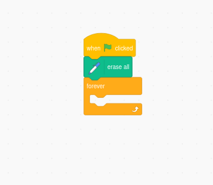

How to use Scratch:
First, to get to Scratch, go to scratch.mit.edu which is the website. When you get to the website, it should look somthing like this.

This is the starting screen of Scratch. To create something, click on the create button in the nav bar.

When you enter, it shows your project with a sprite (thats the character on the stage) of scratch cat (the default sprite), and a tutorial. I suggest that you watch the tutorial.

When your done exploring the tutorials, there are a few things I can show you. One of them is a cool ball spin project. First, make a new project. Call it whatever you want. First grap any sprite you want. (I'm going to use the ball because it looks the best but you can use whatever you want.) Then delete the scratch cat (unless your using that) and go into your new sprite. Grab a When green flag clicked block and then grab a forever block and put after the green flag block. Go into extensions (to do that, watch the Make music, the Video sensing, the Face sensing, or the Talking Tales video. either of the listed show you how to get there.) and find the pen extension. click on it, and find the erase all block and put right after the green flag block, before the forever block. Your code should look like this:
